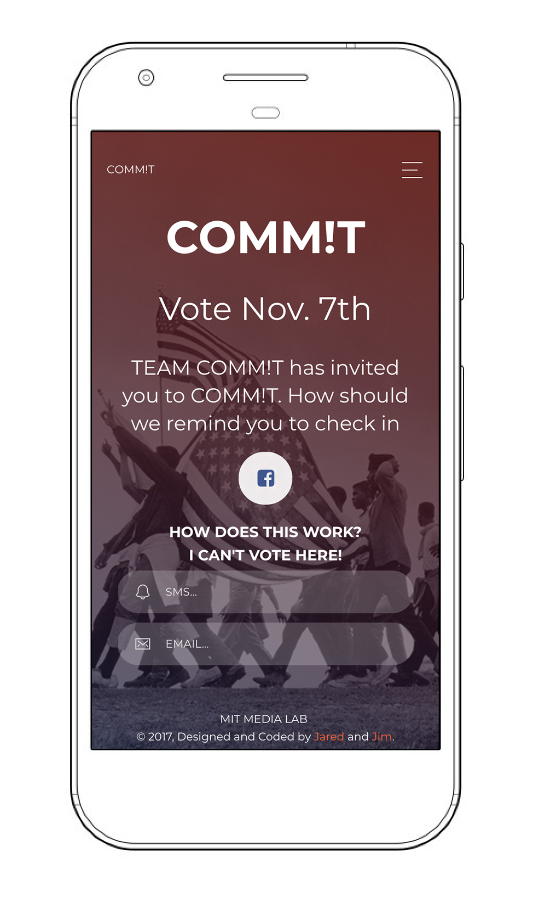
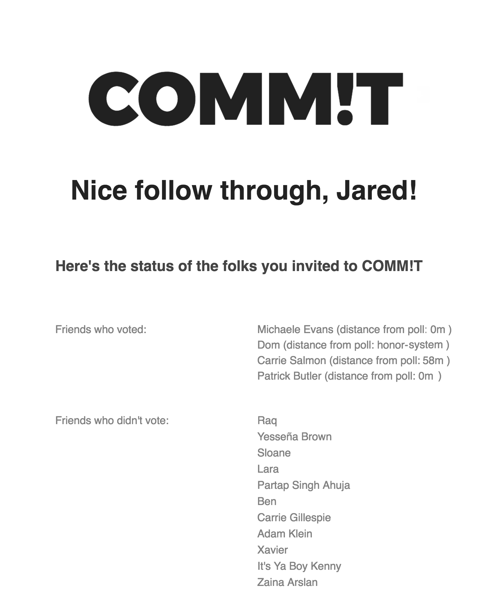
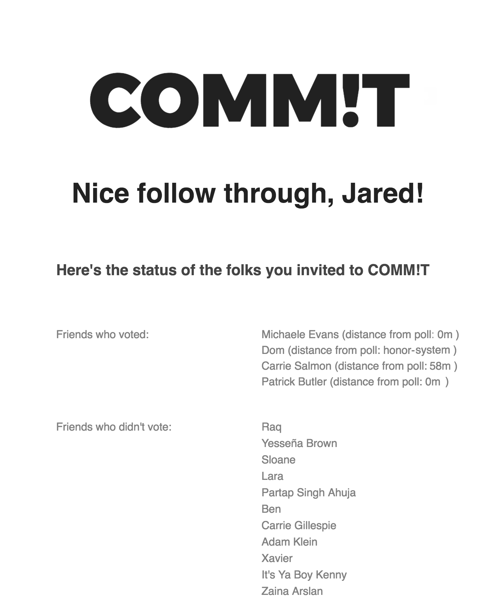

COMM!T GOTV App
GPS and Peer-enforced Civic Commitment App
Visit Commit.Vote to check out the MVP.

 

The COMM!T app keeps people accountable to their friends by letting the friend who invited them know whether or not they checked in at the polls via GPS. COMM!T sends voters reminders with a checkin link that uses Google's Civic Data API to identify polling places for folks to check in. Once a user clicks "COMM!T" their referring friend will be notified on election of their checkin status and commitments cannot be revoked (we provide a few backup options at checkin that give users and their friends an opportunity to hash things out).
"We tell {Your Referring Friend} if you checked in at the polls.
Your vote matters more than you might think. Local elections are often won by tens of votes and local decisions directly impact you. Tomorrow, we'll send you a check-in link that will confirm your location, plus a few reminders. If you don't check in near a polling place, we'll send a simple message to {Your Referring Friend} that says you didn't check in. You can customize the messages that will be sent when you check in (or don't) using the "customize messages" link after you sign in. We'll have check in options for absentee and non-eligible voters. You'll also get to see how many folks you got to COMM!T. We keep all contact info confidential. Now, go for it!"
-Team COMM!T
Project Credits
With sponsorship from
Harvard University
and Cambridge City
Councillor Nadeem Mazen
and help from Naseem Makiya